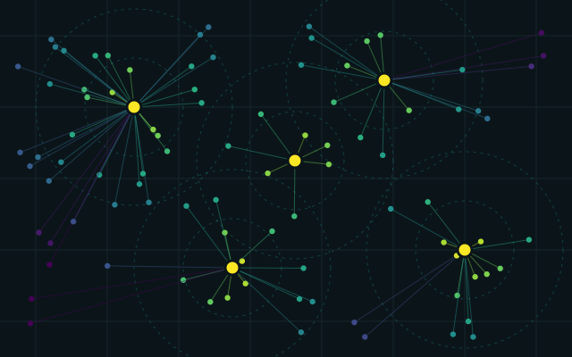
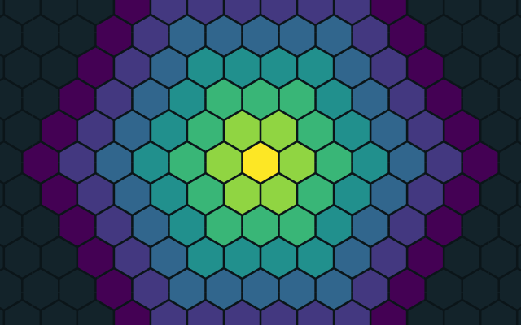
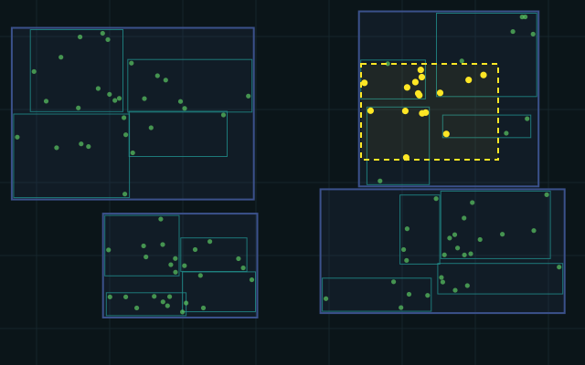
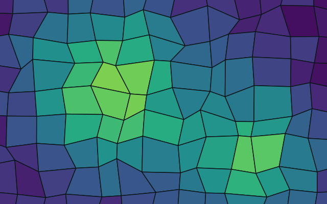
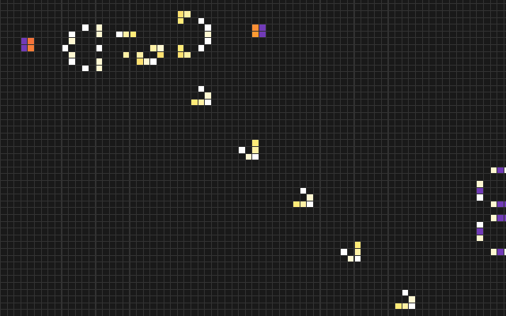
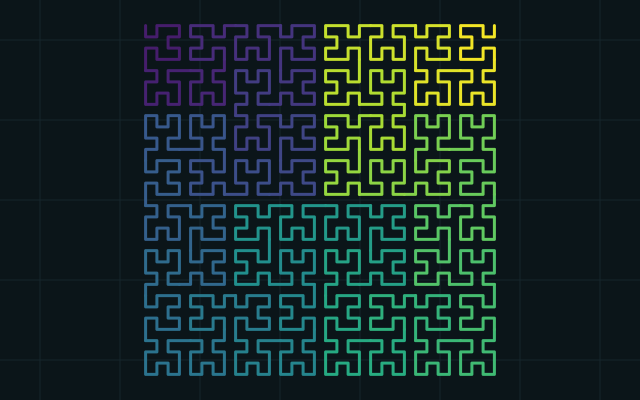

Proximidad a servicios
Distancia de cada punto de demanda a su sitio más cercano con sjoin_nearest
y áreas de influencia por buffers.
[caso, datos usados y resultado]
- Proximidad
- GeoPandas
- Índice espacial
Borrador: quedan 0 datos por completar, marcados
así. Edítalos en index.html antes de publicar.
20.67° N · 103.35° O — Guadalajara, Jalisco
Científico de datos espaciales
AI/ML Technical Lead · Dirección de Inteligencia Artificial, Grupo Bimbo Global
Trabajo con datos que tienen ubicación. Mido la cercanía entre lugares, agrego información en hexágonos H3 e indexo geometrías para que las consultas espaciales escalen. Hoy lidero soluciones de inteligencia artificial y machine learning en producción.
Cargando H3…
Haz clic (o toca) en el mapa para agregar o quitar puntos. Los puntos iniciales son de ejemplo.
Leyenda
Estos símbolos marcan los métodos en cada proyecto de la galería.
sjoin_nearest) y buffers en una proyección métrica.grid_disk).Herramientas Python · GeoPandas · Shapely · H3 · NumPy · Google Colab [agrega las que uses: PostGIS, QGIS, scikit-learn…]
6 proyectos
Metodologías aplicadas con datos abiertos. Filtra por método:

Distancia de cada punto de demanda a su sitio más cercano con sjoin_nearest
y áreas de influencia por buffers.
[caso, datos usados y resultado]

Agregación de puntos en celdas H3 a varias resoluciones y vecindarios por anillos para comparar zonas con celdas del mismo tamaño. El mapa de la portada usa la misma idea.

El índice espacial (sindex) filtra por caja envolvente y solo después se hace
la prueba geométrica exacta.
[tamaño de los datos y tiempo antes / después]

Mapas coropléticos con datos abiertos de INEGI y OpenStreetMap, reproyectados a EPSG:6372 (México ITRF2008 / LCC) para medir en metros. [tema del mapa]


Experimentos cortos para explorar una idea. [2 o 3 notebooks con una línea cada uno]
No hay proyectos con ese método todavía.
Experiencia y formación
20XX – hoy
Dirección de Inteligencia Artificial · Grupo Bimbo Global
[2 o 3 líneas: productos de IA/ML que lideras, equipo y alcance]
20XX – 20XX
Megacable
[proyectos y logros principales]
20XX
[institución]
Tesis: [título]
20XX
[institución]
20XX
[institución]
Si trabajas con datos de ubicación y quieres conversar sobre un proyecto, escríbeme.